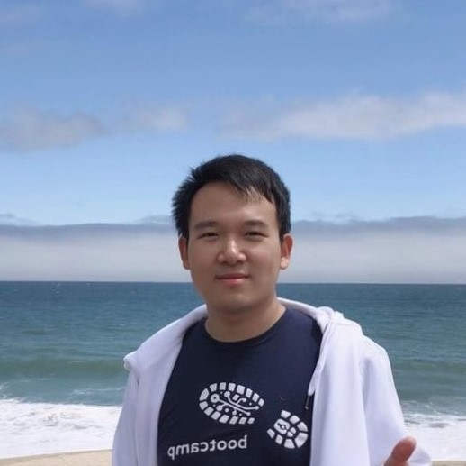

|
Lun Wang
I am a senior research scientist at Google, working on privacy-preserving machine learning. I received my PhD degree in computer science from UC Berkeley, advised by Prof. Dawn Song in summer 2022. Before that, I received my Bachelor's degree with honors from Peking University in computer science in fall 2018.
Email /
Google Scholar /
Github /
Twitter /
LinkedIn
|

|
- AudioMarkBench: Benchmarking Robustness of Audio Watermarking.
Hongbin Liu, Moyang Guo, Zhengyuan Jiang, Lun Wang, Neil Zhenqiang Gong
- Efficiently Train ASR Models that Memorize Less and Perform Better with Per-core Clipping.
Lun Wang, Om Thakkar, Zhong Meng, Nicole Rafidi, Rohit Prabhavalkar, Arun Narayanan.
Interspeech 2024: 25th Interspeech Conference.
- Differentially Private Parameter-Efficient Fine-tuning for Large ASR Models.
Hongbin Liu, Lun Wang, Om Thakkar, Abhradeep Guha Thakurta, Arun Narayanan.
DLSP 2024: 7th Deep Learning Security and Privacy Workshop.
- AITIA: Efficient Secure Computation of Bivariate Causal Discovery.
Truong Son Nguyen, Lun Wang, Evgenios M. Kornaropoulos, Ni Trieu.
CCS 2024: The 31th ACM Conference on Computer and Communications Security.
- Unintended Memorization in Large ASR Models, and How to Mitigate It.
Lun Wang, Om Thakkar, Rajiv Mathews.
ICASSP 2024: 2024 IEEE International Conference on Acoustics, Speech and Signal Processing. (Acceptance rate: 45%)
- Why Is Public Pretraining Necessary for Private Model Training?
Arun Ganesh, Mahdi Haghifam, Milad Nasr, Sewoong Oh, Thomas Steinke, Om Thakkar, Abhradeep Thakurta, Lun Wang. (Authors are ordered alphabetically.)
ICML 2023: Fortieth International Conference on Machine Learning. (Acceptance rate: 1827/6538=27.9%)
- Secure Federated Correlation Test and Entropy Estimation.
Qi Pang*, Lun Wang*, Shuai Wang, Wenting Zheng, Dawn Song.
ICML 2023: Fortieth International Conference on Machine Learning. (Acceptance rate: 1827/6538=27.9%)
- Byzantine-Robust Federated Learning with Optimal Rates and Privacy Guarantee. [code]
Banghua Zhu*, Lun Wang*, Qi Pang*, Shuai Wang, Jiantao Jiao, Dawn Song, Michael I.Jordan.
AISTATS 2023: Artificial Intelligence and Statistics 2023. (Acceptance rate: 29%)
- Differentially Private Fractional Frequency Moments Estimation with Polylogarithmic Space.
Lun Wang, Iosif Pinelis, Dawn Song.
ICLR 2022: the 10th International Conference on Learning Representations. (Acceptance rate: 1095/3391=32.3%))
- PRIVGUARD: Privacy Regulation Compliance Made Easier.
Lun Wang, Usmann Khan, Joseph Near, Qi Pang, Jithendaraa Subramanian, Neel Somani, Peng Gao, Andrew Low, Dawn Song.
Usenix Security'22: the 31th Usenix Security Symposium. (Acceptance rate: 18%)
- BACKDOORL: Backdoor Attack against Competitive Reinforcement Learning.
Lun Wang, Zaynah Javed, Xian Wu, Wenbo Guo, Xinyu Xing, Dawn Song.
IJCAI'21: the 30th International Joint Conference on Artificial Intelligence. (Acceptance rate: 587/4204=13.9%)
- Towards practical differentially private causal graph discovery. [code]
Lun Wang, Qi Pang, Dawn Song.
NeurIPS'20: Proceedings of The 34th Annual Conference on Neural Information Processing Systems. (Acceptance rate: 1900/9454=20.1%)
- Towards Inspecting and Eliminating Trojan Backdoors in Deep Neural Networks.
Wenbo Guo*, Lun Wang*, Yan Xu, Xinyu Xing, Min Du, Dawn Song.
ICDM'20: 20th IEEE International Conference on Data Mining. (Acceptance rate: 91/930=9.8%)
- CHURP: Dynamic-committee proactive secret sharing. [project page]/[code]
SKD Maram, Fan Zhang, Lun Wang, Andrew Low, Yupeng Zhang, Ari Juels, Dawn Song.
CCS'19: Computer and Communications Security 2019. (Acceptance Rate: 149/934=16.0%)
- DUET: An expressive higher-order language and linear type system for statically enforcing differential privacy. [code]
Joseph Near, David Darais, Chike Abuah, Tim Stevens, Pranav Gaddamadugu, Lun Wang, Neel Somani, Mu Zhang, Nikhil Sharma, Alex Shan, Dawn Song.
OOPSLA'19: Proceedings of the ACM on Programming Languages, 2019. Distinguished Paper Award. (2.5% of all submissions)
- Towards practical differentially private convex optimization. [code]
Roger Iyengar, Joseph Near, Dawn Song, Om Thakkar, Abhradeep Thakurta, Lun Wang. (Authors are ordered alphabetically.)
Oakland'19: 2019 IEEE Symposium on Security and Privacy. (Acceptance rate: 12%)
Service
- Journal Reviewer: Journal of Causal Inference, IEEE Transactions on Pattern Analysis and Machine Intelligence, IEEE Transactions on Dependable and Secure Computing, Transactions on Machine Learning Research, Frontiers in Computer Science
- Conference Reviewer: AAAI 2024, Interspeech 2024, ITCS 2023, RANDOM 2023, AISTATS 2022-2024, ICML 2021-2024, ICLR 2022-2024, Neurips 2021-2024, CCS 2021/2023, WWW 2021, ECML-PKDD 2021, PoPETS 2021-2024
- Program Committee: FedKDD 2024, TPDP 2024, CCS 2023, FL @ ICML 2023, SPAI 2020, WNA 2020
|